高效 LLM 推理服务基础 I：LLM 入门
一个 LLM 请求的生命周期（分词→调度→预填充→解码→流式输出）；Transformer 块、注意力与 GQA、MoE，以及滑动窗口、MLA、线性注意力、扩散 LM 等新变体。
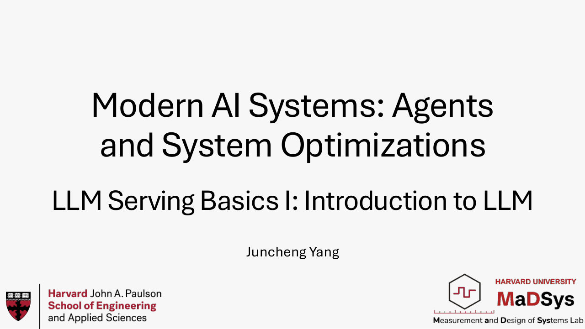
现代 AI 系统：智能体与系统优化
Juncheng Yang
LLM 推理服务基础 I：LLM 入门
事务安排
- 作业 3 周二晚 11:59 截止
- 排行榜提交不能用迟交日
- 请到网站上查看需要提交哪些内容
- 项目海报展示第二个时段：12 月 2 日 1–3pm
- 只有在 12 月 7 日无法参加时才报名
- 报名已于上周日截止；如果想在 12 月 2 日展示，请尽快发邮件给我们
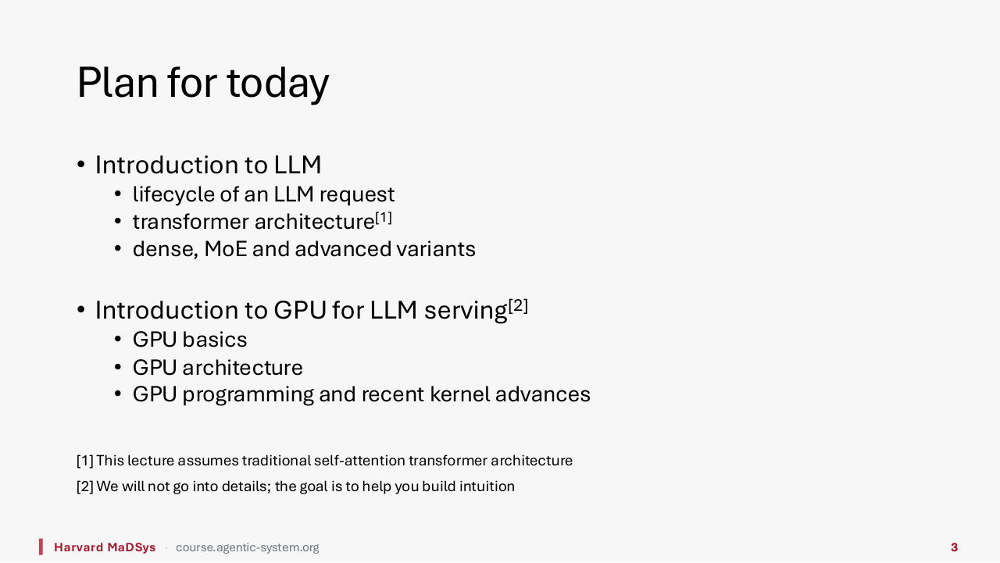
今天的安排
- LLM 入门
- 一个 LLM 请求的生命周期
- Transformer 架构 [1]
- 稠密模型、MoE 及高级变体
- 面向 LLM 推理服务的 GPU 入门 [2]
- GPU 基础
- GPU 架构
- GPU 编程与近期的 kernel 进展
[2] 不深入细节，目标是帮你建立直觉
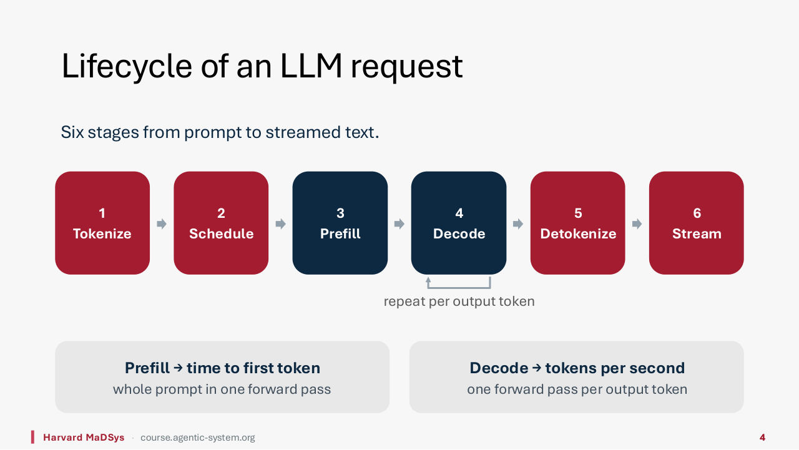
一个 LLM 请求的生命周期
从提示词到流式输出文本的六个阶段：
分词（Tokenize）→ 调度（Schedule）→ 预填充（Prefill）→ 解码（Decode）→ 反分词（Detokenize）→ 流式输出（Stream），后几个阶段对每个输出 token 重复
- 预填充 → 首 token 延迟（TTFT）：整个提示词在一次前向传播中完成
- 解码 → 每秒 token 数：每个输出 token 一次前向传播
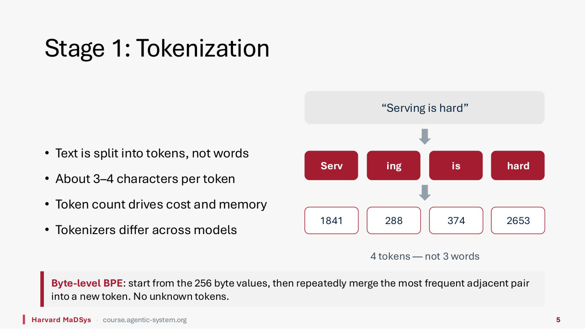
阶段 1：分词
- 文本被切分成 token，而不是单词
- 大约每 3–4 个字符一个 token
- token 数量决定成本和内存
- 不同模型的分词器不同
示例：“Serving is hard” → Serv ing is hard（ID 如 1841、2653……）——4 个 token，而不是 3 个单词
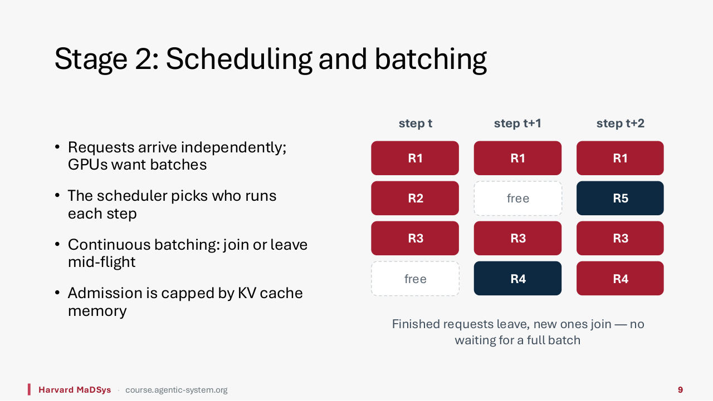
阶段 2：调度与批处理
- 请求独立到达；GPU 喜欢批量处理
- 调度器决定每一步由谁运行
- 连续批处理：请求可以在中途加入或离开
- 准入受 KV cache 内存限制
（图：第 t 步运行 R1、R2、R3，空一个位；第 t+1 步 R2 完成离开，R4 加入；第 t+2 步 R5 加入）
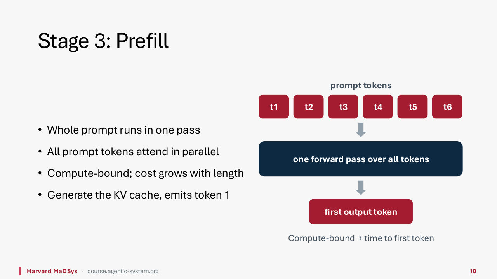
阶段 3：预填充
- 整个提示词一次性运行
- 所有提示词 token 并行地做注意力
- 计算密集型；成本随长度增长
- 生成 KV cache，输出第 1 个 token
（图：提示词 token t1…t6 → 对所有 token 一次前向传播 → 第一个输出 token）
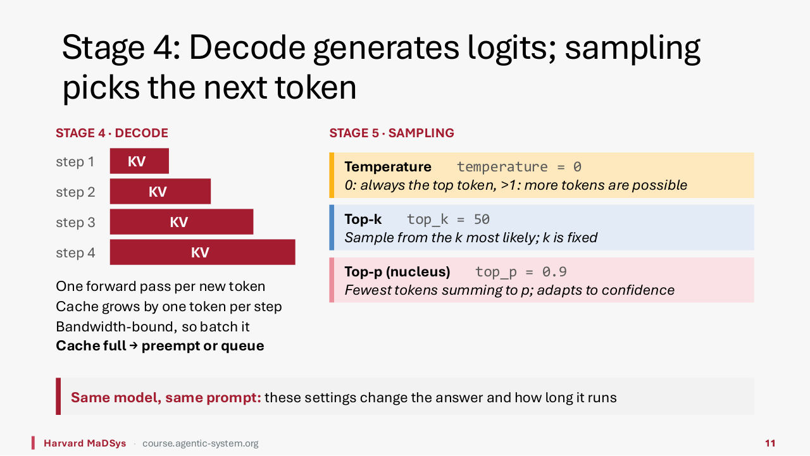
阶段 4：解码生成 logits；采样选出下一个 token
阶段 4 · 解码
- 每个新 token 一次前向传播
- 缓存每步增长一个 token
- 带宽密集型，所以要批处理
- 缓存满了 → 抢占或排队
阶段 5 · 采样
- Temperature（温度）
temperature = 0：0 时总是取最高分 token，>1 时更多 token 有机会被选中 - Top-k
top_k = 50：从最可能的 k 个中采样；k 固定 - Top-p（核采样）
top_p = 0.9：取概率之和达到 p 的最少 token；会随置信度自适应
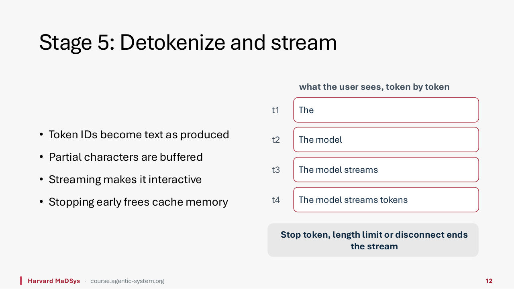
阶段 5：反分词与流式输出
- token ID 一生成就转换成文本
- 不完整的字符会被缓冲
- 流式输出让交互成为可能
- 提前停止可释放缓存内存
用户逐 token 看到的内容：The → The model → The model streams → The model streams tokens
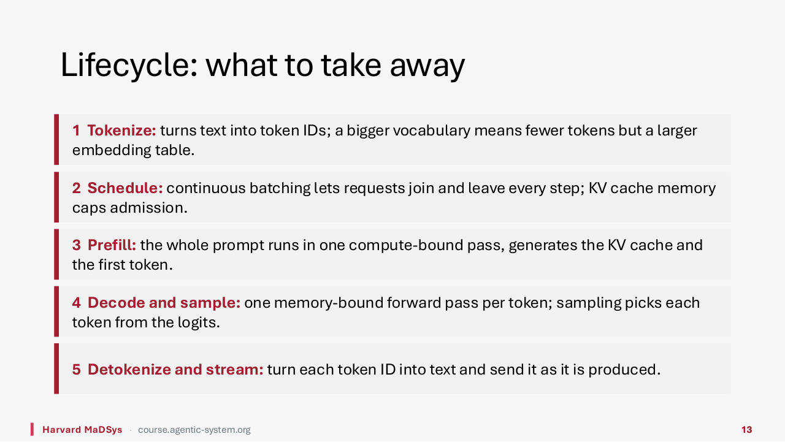
生命周期：要点总结
- 分词：把文本转成 token ID；词表越大，token 越少，但 embedding 表越大
- 调度：连续批处理让请求每一步都可以加入和离开；KV cache 内存限制准入
- 预填充：整个提示词在一次计算密集的前向中运行，生成 KV cache 和第一个 token
- 解码与采样：每个 token 一次访存密集的前向；采样从 logits 中选出每个 token
- 反分词与流式输出：把每个 token ID 转为文本，生成即发送
窥探模型内部
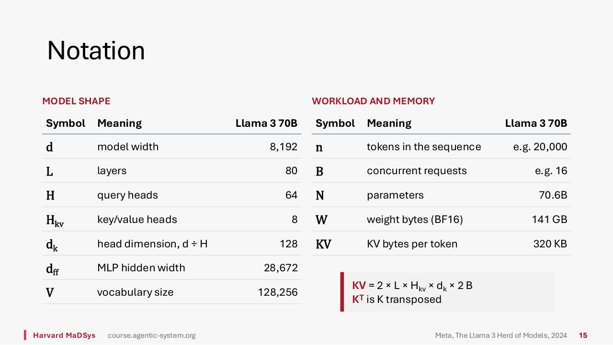
符号约定
模型形状
| 符号 | 含义 | Llama 3 70B |
|---|---|---|
| d | 模型宽度 | 8,192 |
| L | 层数 | 80 |
| H | query 头数 | 64 |
| H_kv | key/value 头数 | 8 |
| d_k | 头维度，d ÷ H | 128 |
| d_ff | MLP 隐藏层宽度 | 28,672 |
| V | 词表大小 | 128,256 |
负载与内存
| 符号 | 含义 | Llama 3 70B |
|---|---|---|
| n | 序列中的 token 数 | 例如 20,000 |
| B | 并发请求数 | 例如 16 |
| N | 参数量 | 70.6B |
| W | 权重字节数（BF16） | 141 GB |
| KV | 每 token 的 KV 字节数 | 320 KB |
（Meta, The Llama 3 Herd of Models, 2024）
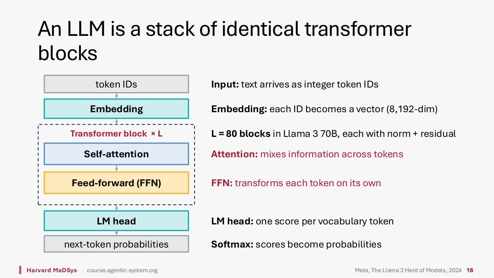
LLM 是一摞相同的 Transformer 块
- 输入：文本以整数 token ID 的形式进入
- Embedding：每个 ID 变成一个向量（8,192 维）
- Transformer 块 × L：Llama 3 70B 有 L = 80 个块，每块都有归一化 + 残差
- 自注意力：在 token 之间混合信息
- 前馈网络（FFN）：对每个 token 单独做变换
- LM head：为词表中每个 token 打一个分
- Softmax：分数变成概率 → 下一个 token 的概率
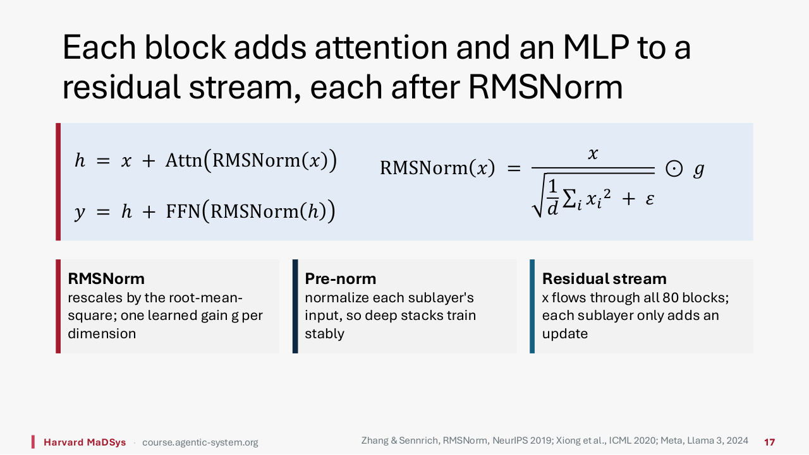
每个块在残差流上加上注意力和 MLP，各自前面都有 RMSNorm
y = h + FFN(RMSNorm(h))
RMSNorm(x) = x / √( (1/d) Σᵢ xᵢ² + ε ) ⊙ g
- RMSNorm：按均方根缩放；每个维度一个可学习的增益 g
- Pre-norm（前置归一化）：对每个子层的输入做归一化，使深层堆叠训练稳定
- 残差流：x 流经全部 80 个块；每个子层只是加上一个更新量
（Zhang & Sennrich, RMSNorm, NeurIPS 2019；Xiong et al., ICML 2020；Meta, Llama 3, 2024）
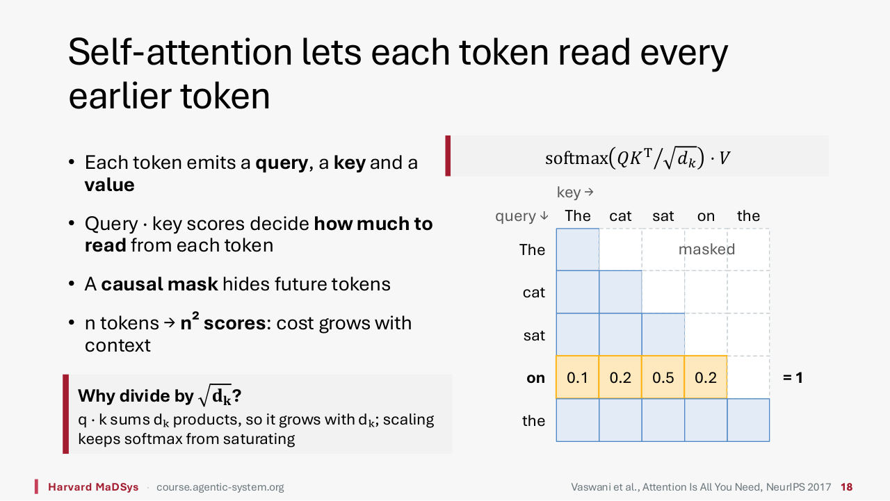
自注意力让每个 token 读取它之前的所有 token
- 每个 token 发出一个 query、一个 key 和一个 value
- query · key 的分数决定从每个 token 读取多少
- 因果掩码遮住未来的 token
- n 个 token → n² 个分数：成本随上下文增长
（图：“The cat sat on the”的注意力矩阵，某一行权重 0.1 / 0.2 / 0.5 / 0.2，和为 1；对角线以上被遮蔽）
为什么要除以 √d_k？ q · k 是 d_k 个乘积之和，会随 d_k 增大；缩放可防止 softmax 饱和。
（Vaswani et al., Attention Is All You Need, NeurIPS 2017）
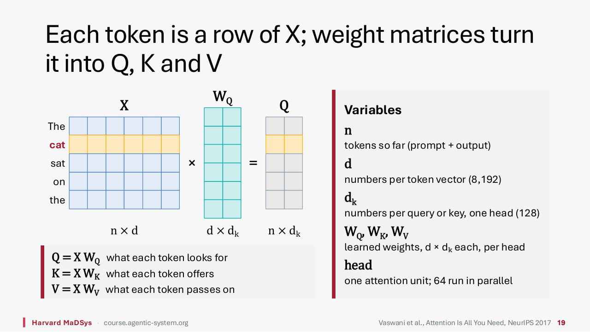
每个 token 是 X 的一行；权重矩阵把它变成 Q、K、V
X（n × d）× W_Q（d × d_k）= Q（n × d_k）
- Q = X W_Q：每个 token 在找什么
- K = X W_K：每个 token 能提供什么
- V = X W_V：每个 token 传递什么
变量
- n：到目前为止的 token 数（提示词 + 输出）
- d：每个 token 向量的维数（8,192）
- d_k：单个头中 query 或 key 的维数（128）
- W_Q、W_K、W_V：可学习权重，每个头各一个 d × d_k 矩阵
- head：一个注意力单元；64 个并行运行
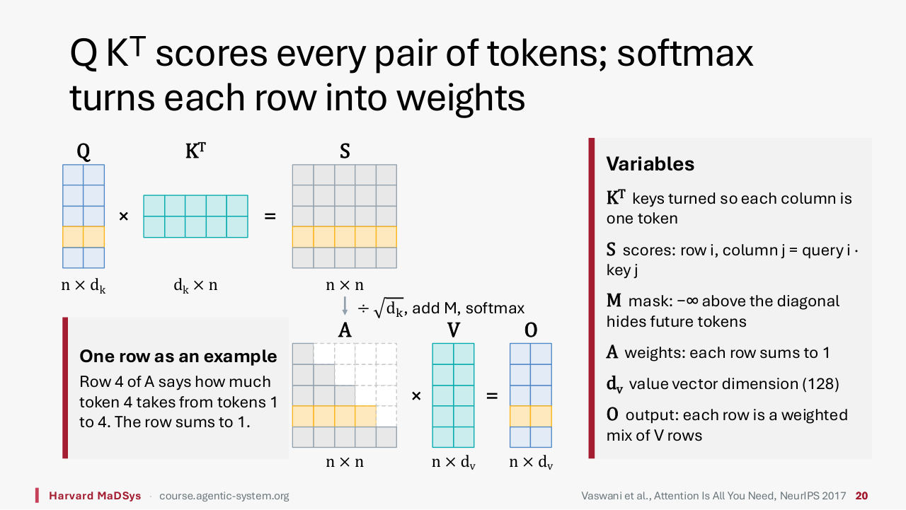
QKᵀ 给每对 token 打分；softmax 把每行变成权重
Q（n × d_k）× Kᵀ（d_k × n）= S（n × n）→ ÷ √d_k，加上 M，做 softmax → A（n × n）× V（n × d_v）= O（n × d_v）
以一行为例：A 的第 4 行表示 token 4 从 token 1 到 4 分别取多少，这一行之和为 1。
变量
- Kᵀ：转置后的 key，每列是一个 token
- S：分数，第 i 行第 j 列 = query i · key j
- M：掩码，对角线以上为 −∞，遮住未来 token
- A：权重，每行之和为 1
- d_v：value 向量维度（128）
- O：输出，每行是 V 各行的加权混合
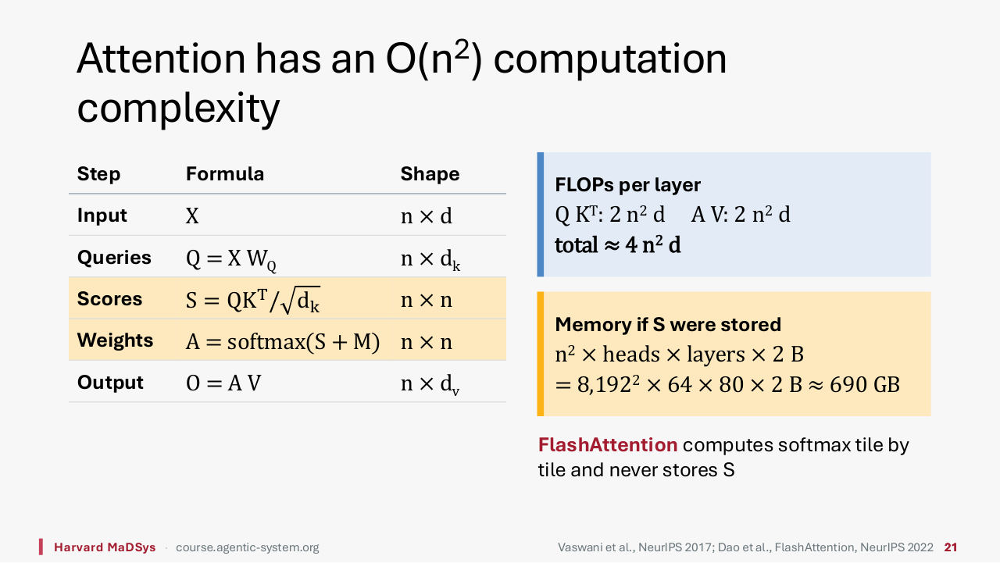
注意力的计算复杂度是 O(n²)
| 步骤 | 公式 | 形状 |
|---|---|---|
| 输入 | X | n × d |
| Query | Q = X W_Q | n × d_k |
| 分数 | S = QKᵀ / √d_k | n × n |
| 权重 | A = softmax(S + M) | n × n |
| 输出 | O = A V | n × d_v |
每层 FLOPs：QKᵀ：2n²d；AV：2n²d；合计 ≈ 4n²d
如果把 S 存下来需要的内存：n² × 头数 × 层数 × 2 B = 8,192² × 64 × 80 × 2 B ≈ 690 GB
（Vaswani et al., NeurIPS 2017；Dao et al., FlashAttention, NeurIPS 2022）
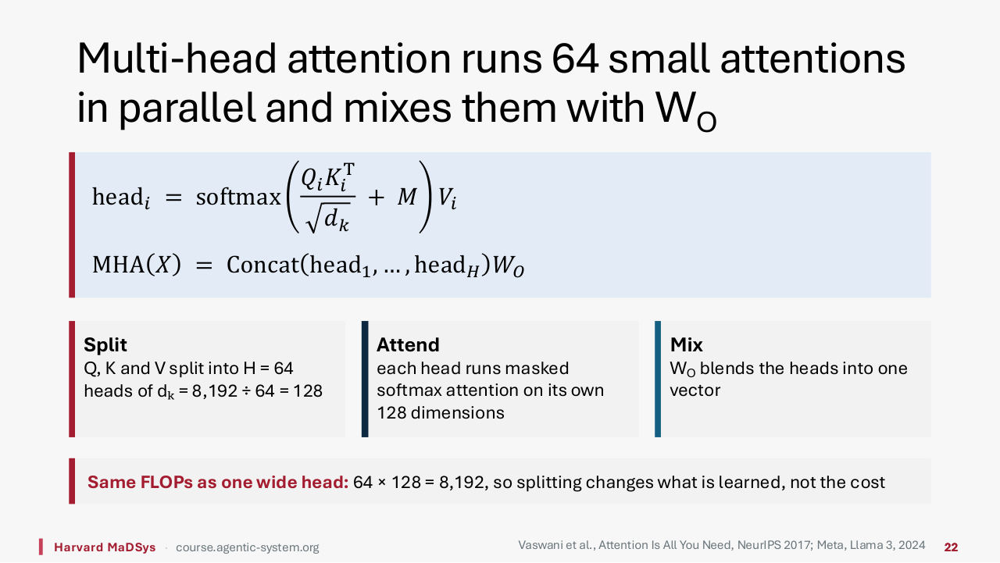
多头注意力并行运行 64 个小注意力，再用 W_O 混合
MHA(X) = Concat(head₁, …, head_H) W_O
- 拆分：Q、K、V 拆成 H = 64 个头，每个 d_k = 8,192 ÷ 64 = 128
- 注意：每个头在自己的 128 维上做带掩码的 softmax 注意力
- 混合：W_O 把各个头融合成一个向量
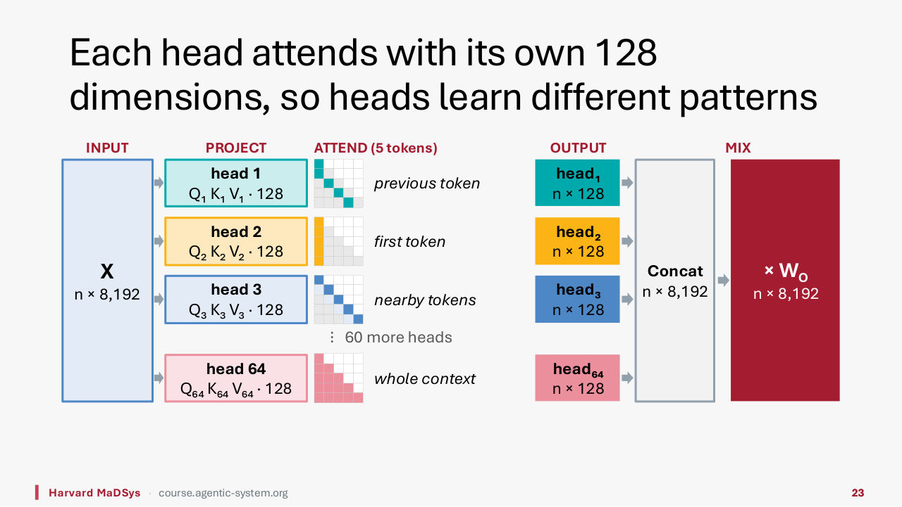
每个头用自己的 128 维做注意力，因此各头学到不同的模式
- 输入 X：n × 8,192
- 投影：head 1 … head 64，各有 Q K V（128 维）
- 注意（5 个 token 示意）：head 1 关注前一个 token；head 2 关注第一个 token；head 3 关注邻近 token；head 64 关注整个上下文；……还有 60 个头
- 输出：各 head 为 n × 128 → 拼接为 n × 8,192 → × W_O → n × 8,192
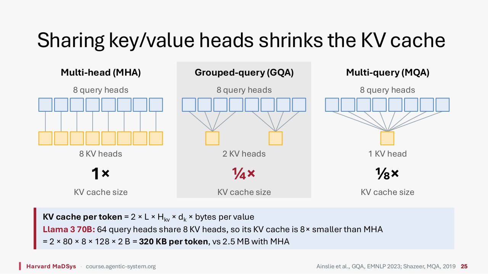
共享 key/value 头可以缩小 KV cache
- 多头（MHA）：8 个 query 头、8 个 KV 头 → KV cache 1×
- 分组查询（GQA）：8 个 query 头、2 个 KV 头 → KV cache ¼×
- 多查询（MQA）：8 个 query 头、1 个 KV 头 → KV cache ⅛×
Llama 3 70B：64 个 query 头共享 8 个 KV 头，KV cache 比 MHA 小 8 倍
= 2 × 80 × 8 × 128 × 2 B = 每 token 320 KB，而 MHA 为 2.5 MB
（Ainslie et al., GQA, EMNLP 2023；Shazeer, MQA, 2019）
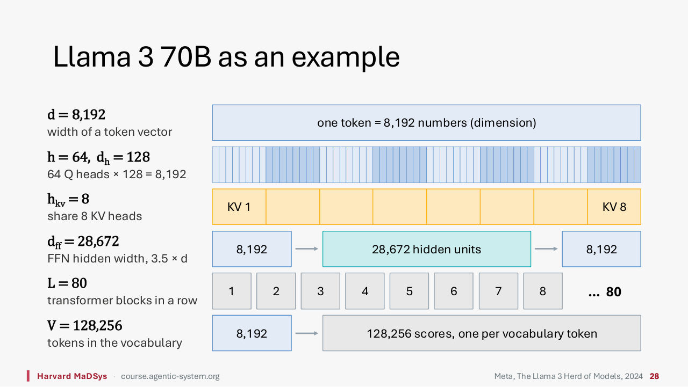
以 Llama 3 70B 为例
- d = 8,192：token 向量的宽度
- h = 64，d_h = 128：64 个 Q 头 × 128 = 8,192
- h_kv = 8：共享 8 个 KV 头
- d_ff = 28,672：FFN 隐藏层宽度，3.5 × d
- L = 80：串联的 Transformer 块数
- V = 128,256：词表中的 token 数
（图：一个 token = 8,192 个数 → 注意力（KV 1…KV 8）→ 8,192 → FFN 28,672 个隐藏单元 → 8,192 → … 共 80 层 → 128,256 个分数，词表中每个 token 一个）
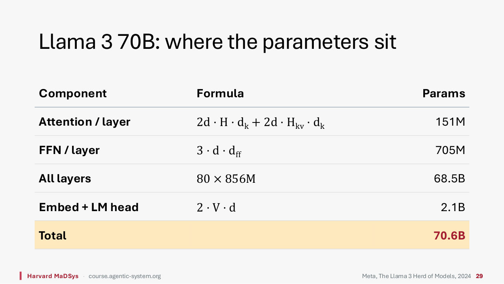
Llama 3 70B：参数都在哪里
| 组件 | 公式 | 参数量 |
|---|---|---|
| 注意力 / 每层 | 2d · H · d_k + 2d · H_kv · d_k | 151M |
| FFN / 每层 | 3 · d · d_ff | 705M |
| 所有层 | 80 × 856M | 68.5B |
| Embedding + LM head | 2 · V · d | 2.1B |
| 合计 | 70.6B |
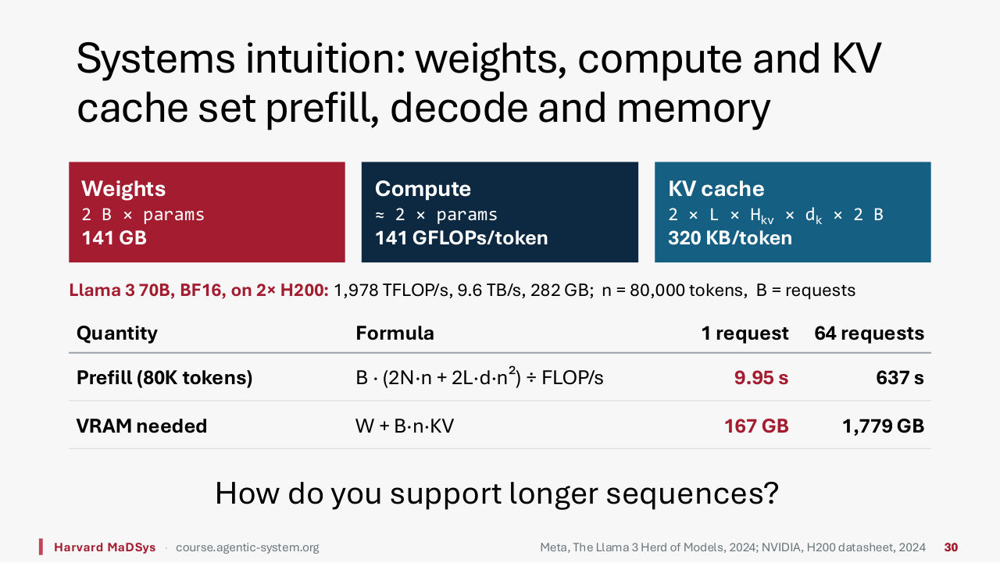
系统直觉：权重、计算量和 KV cache 决定了预填充、解码与内存
- 权重：2 B × 参数量 = 141 GB
- 计算量：≈ 2 × 参数量 = 每 token 141 GFLOPs
- KV cache：2 × L × H_kv × d_k × 2 B = 每 token 320 KB
Llama 3 70B，BF16，运行在 2× H200 上：1,978 TFLOP/s、9.6 TB/s、282 GB；n = 80,000 token，B = 请求数
| 量 | 公式 | 1 个请求 | 64 个请求 |
|---|---|---|---|
| 预填充（80K token） | B · (2N·n + 2L·d·n²) ÷ FLOP/s | 9.95 s | 637 s |
| 所需显存 | W + B·n·KV | 167 GB | 1,779 GB |
（Meta, The Llama 3 Herd of Models, 2024；NVIDIA, H200 datasheet, 2024）
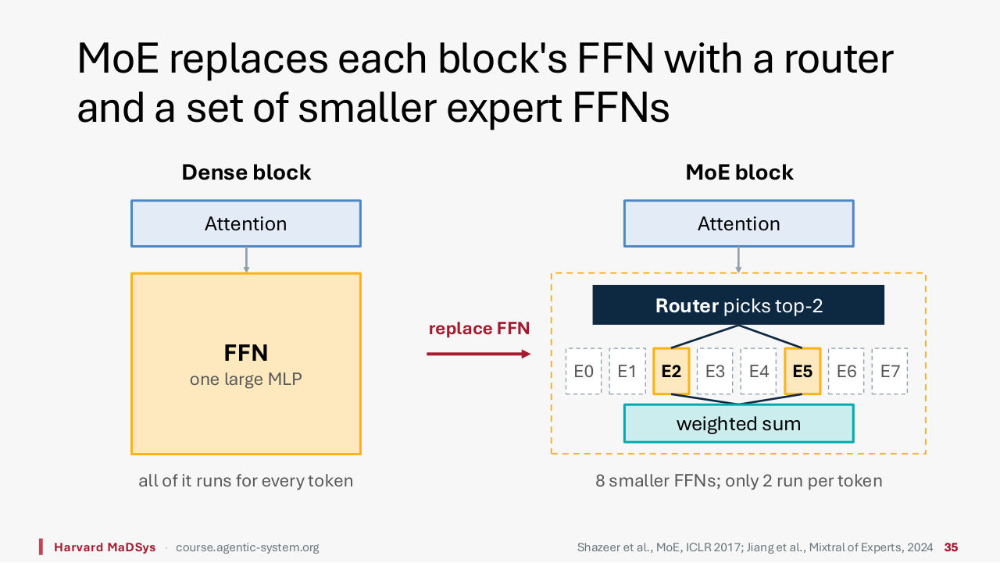
MoE 把每个块的 FFN 替换为一个路由器和一组更小的专家 FFN
- 稠密块：注意力 → FFN（一个大 MLP，每个 token 都要完整运行）
- MoE 块：注意力 → 路由器选出 top-2 → E0…E7 共 8 个更小的 FFN，每个 token 只运行其中 2 个 → 加权求和
（Shazeer et al., MoE, ICLR 2017；Jiang et al., Mixtral of Experts, 2024）
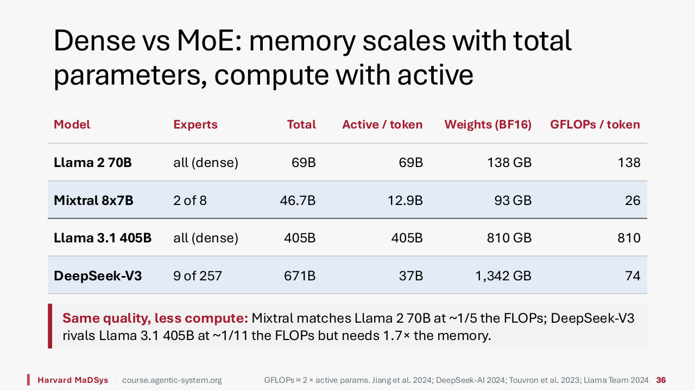
稠密 vs MoE：内存随总参数量增长，计算随激活参数量增长
| 模型 | 专家 | 总参数 | 每 token 激活 | 权重（BF16） | 每 token GFLOPs |
|---|---|---|---|---|---|
| Llama 2 70B | 全部（稠密） | 69B | 69B | 138 GB | 138 |
| Mixtral 8x7B | 8 选 2 | 46.7B | 12.9B | 93 GB | 26 |
| Llama 3.1 405B | 全部（稠密） | 405B | 405B | 810 GB | 810 |
| DeepSeek-V3 | 257 选 9 | 671B | 37B | 1,342 GB | 74 |
（GFLOPs ≈ 2 × 激活参数量。Jiang et al. 2024；DeepSeek-AI 2024；Touvron et al. 2023；Llama Team 2024）
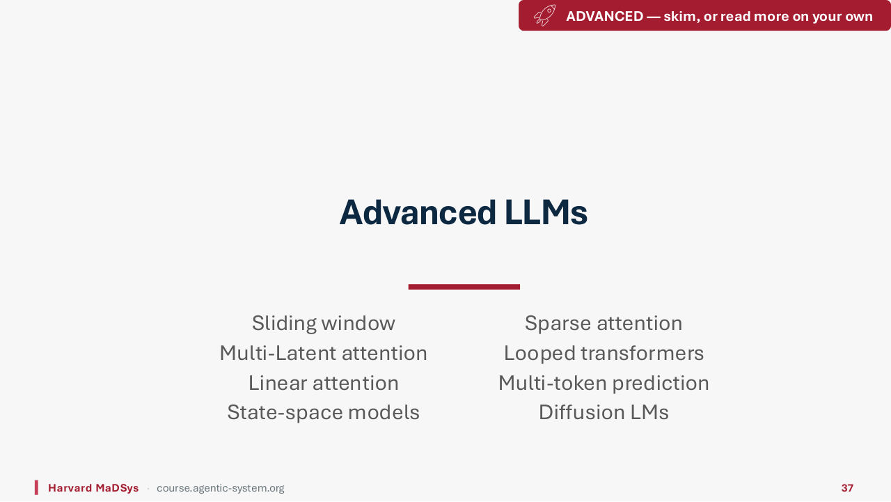
高级 LLM 变体
- 滑动窗口注意力
- 多头潜在注意力（Multi-Latent Attention, MLA）
- 线性注意力
- 状态空间模型
- 稀疏注意力
- 循环 Transformer（Looped transformers）
- 多 token 预测
- 扩散语言模型
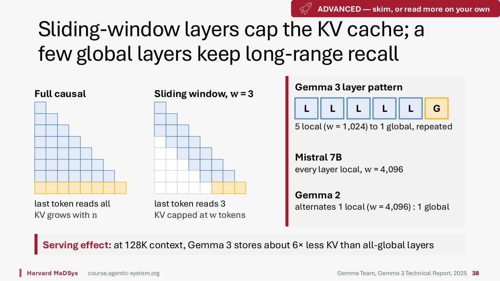
滑动窗口层限制 KV cache 大小；少量全局层保留长程回忆
- 完整因果注意力：最后一个 token 读取全部，KV 随 n 增长
- 滑动窗口，w = 3：最后一个 token 只读 3 个，KV 上限为 w 个 token
层的排布
- Gemma 3：5 个局部层（w = 1,024）对 1 个全局层，循环重复
- Mistral 7B：每层都是局部，w = 4,096
- Gemma 2：1 个局部层（w = 4,096）与 1 个全局层交替
ADVANCED——略读，或自行深入
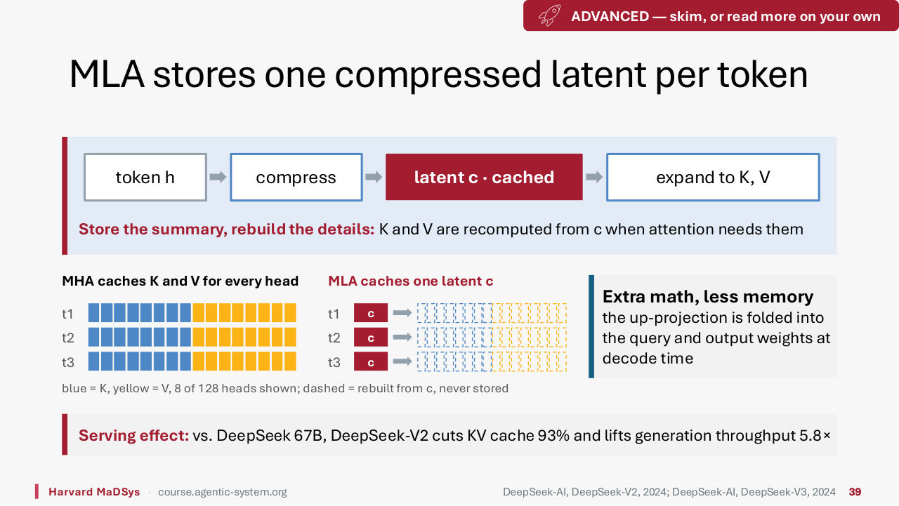
MLA 为每个 token 只存一个压缩后的潜向量
token h → 压缩 → 潜向量 c（缓存）→ 展开为 K、V
- 存摘要，重建细节：注意力需要时，K 和 V 从 c 重新计算
- 多一点计算，少很多内存：解码时，上投影被折叠进 query 和输出权重中
- MHA 为每个头缓存 K 和 V；MLA 只缓存一个潜向量 c（虚线部分由 c 重建，从不存储）
ADVANCED——略读，或自行深入
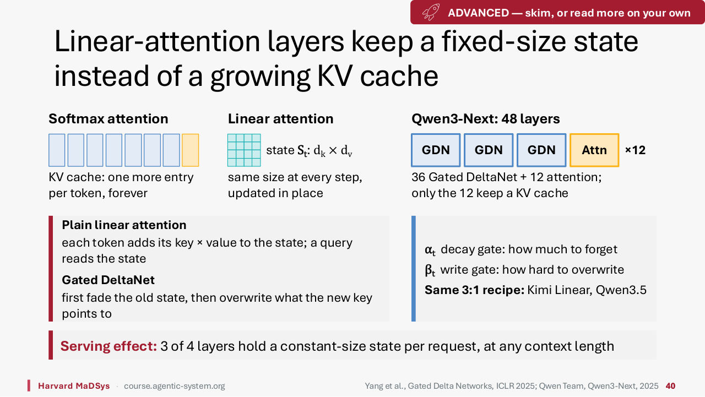
线性注意力层保持固定大小的状态，而不是不断增长的 KV cache
- Softmax 注意力：KV cache 每个 token 多一项，永远增长
- 线性注意力：状态 S_t 为 d_k × d_v，每一步大小不变，原地更新
- 朴素线性注意力：每个 token 把它的 key × value 加到状态上；query 读取状态
- Gated DeltaNet：先让旧状态衰减，再覆写新 key 所指向的内容
- α_t：衰减门——遗忘多少
- β_t：写入门——覆写得多用力
- Qwen3-Next：48 层 = 36 个 Gated DeltaNet + 12 个注意力层（GDN, GDN, GDN, Attn）×12；只有那 12 层保留 KV cache
- 同样的 3:1 配方：Kimi Linear、Qwen3.5
ADVANCED——略读，或自行深入
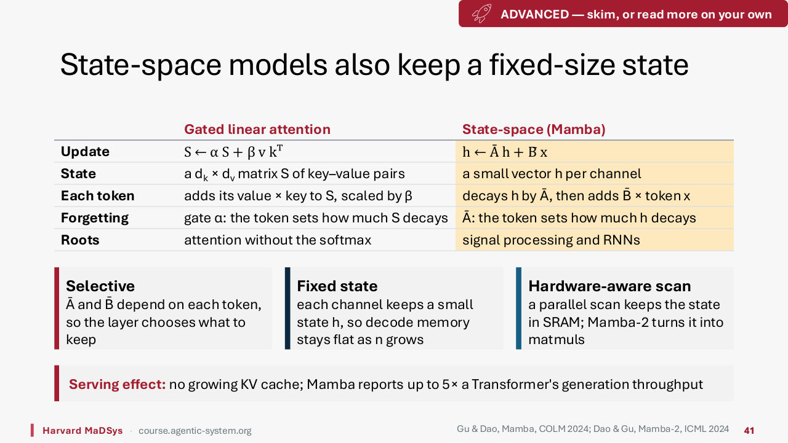
状态空间模型同样保持固定大小的状态
| 门控线性注意力 | 状态空间（Mamba） | |
|---|---|---|
| 更新 | S ← α S + β v kᵀ | h ← Ā h + B̄ x |
| 状态 | 一个 d_k × d_v 的键值矩阵 S | 每个通道一个小向量 h |
| 每个 token | 把 value × key（按 β 缩放）加到 S | 先用 Ā 衰减 h，再加上 B̄ × token x |
| 遗忘 | 门 α：由 token 决定 S 衰减多少 | Ā：由 token 决定 h 衰减多少 |
| 渊源 | 去掉 softmax 的注意力 | 信号处理和 RNN |
- 选择性：Ā 和 B̄ 依赖于每个 token，所以该层能选择保留什么
- 固定状态：每个通道保存一个小状态 h，解码内存不随 n 增长
- 硬件感知的扫描：并行扫描把状态保持在 SRAM 中；Mamba-2 将其转化为矩阵乘
ADVANCED——略读，或自行深入
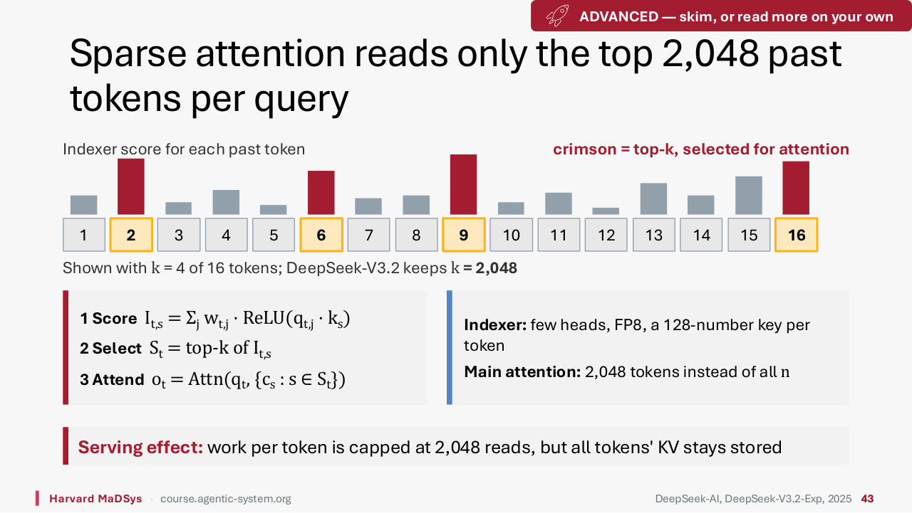
稀疏注意力：每个 query 只读取前 2,048 个最相关的历史 token
- 打分：I_{t,s} = Σⱼ w_{t,j} · ReLU(q_{t,j} · k_s)
- 选择：S_t = I_{t,s} 中的 top-k
- 注意：o_t = Attn(q_t, {c_s : s ∈ S_t})
- 索引器：头数少、FP8、每个 token 一个 128 维的 key
- 主注意力：只看 2,048 个 token，而不是全部 n 个
（图示为 16 个 token 中取 k = 4；DeepSeek-V3.2 取 k = 2,048；深红色为被选中的 top-k）
ADVANCED——略读，或自行深入
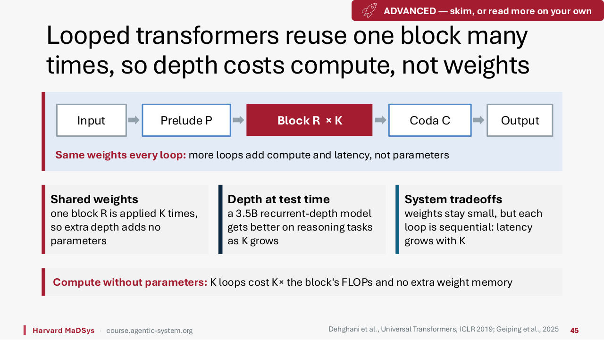
循环 Transformer：同一个块重复使用多次，深度消耗的是计算而不是权重
输入 → 前奏 P → 块 R × K → 尾声 C → 输出（每次循环使用相同权重）
- 共享权重：一个块 R 被应用 K 次，额外的深度不增加参数
- 测试时的深度：一个 3.5B 的循环深度模型，随 K 增大在推理任务上表现更好
- 系统权衡：权重保持很小，但每次循环是串行的：延迟随 K 增长
ADVANCED——略读，或自行深入
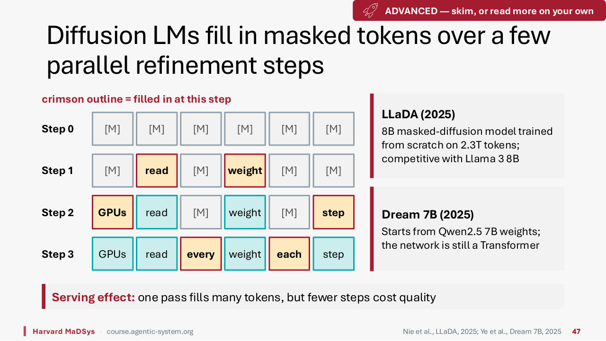
扩散语言模型：通过几步并行细化来填充被遮蔽的 token
- 第 0 步：[M] [M] [M] [M] [M] [M]
- 第 1 步：[M] read [M] weight [M] [M]
- 第 2 步：GPUs read [M] weight [M] step
- 第 3 步：GPUs read every weight each step
（深红色边框 = 本步填入）
- LLaDA（2025）：8B 掩码扩散模型，在 2.3T token 上从零训练；与 Llama 3 8B 相当
- Dream 7B（2025）：从 Qwen2.5 7B 权重出发；网络本身仍是 Transformer
ADVANCED——略读，或自行深入
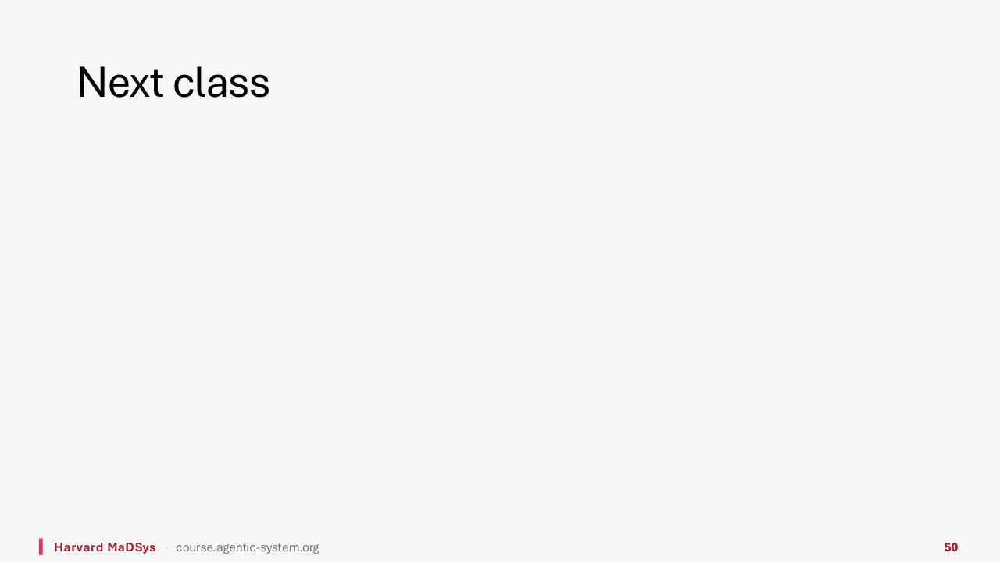
下节课
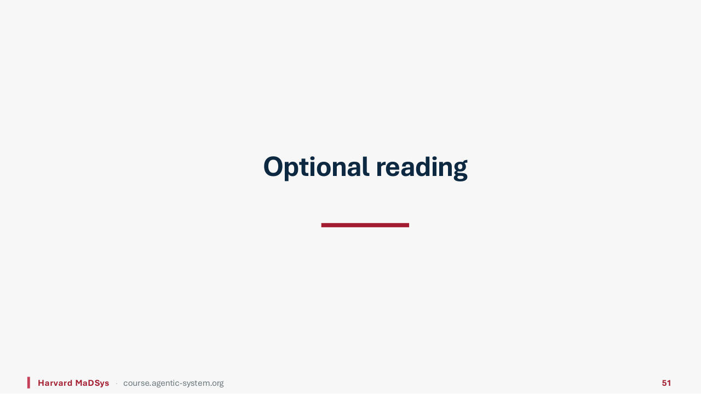